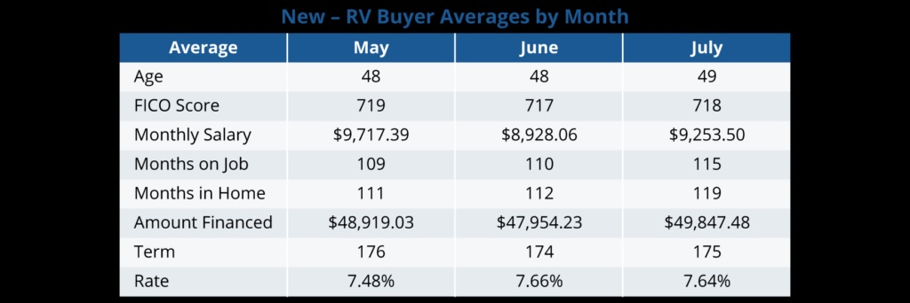
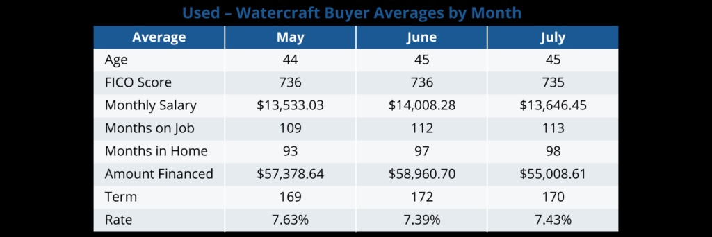
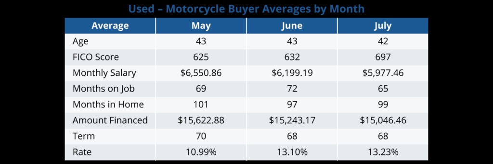

Chet Heughan
Oct 1, 2023
Identifying the common qualities of your buyers is critical to helping you form more effective lending strategies. To give you insight into your market, we compiled an overview of key statistics of the average buyer based on AppOne’s dealer customers for new and used RV, marine, and motorcycle vehicles. Looking at a three-month snapshot of May, June, and July, we found that these recreational markets remained stable with financially strong buyers and minor market fluctuations.
Let’s look at more detailed insights on each of these markets below.

Among new-RV buyers, the average age and FICO score stayed consistent across the three months. There were was a slight upwards trend for average months on the job and in home. The monthly salary and average amount financed decreased from May to June but increased in July, while the term remained stable. The average rate showed a slight increase from May to June with no notable change in July.
Similar to new-RV buyers, used-RV buyers’ average age, FICO score, months on job, and months in home stayed consistent. Monthly salary had a slight increase in June but dropped down again in July. The average amount financed and rate trended upward, while the average term remained stable.
Overall, both new- and used-RV buyers showed similar trends and averages throughout May, June, and July in most categories. This finding suggests a consistent pool of buyers in the RV industry, which falls in line with earlier predictions that RV sales would remain strong throughout summer due to strong consumer interest.
One key difference between the two groups is new-RV buyers financed higher average amounts for longer terms and lower rates than used-RV buyers, likely due to the higher cost of newer RV vehicles. Despite broader economic conditions affecting interest rates, financing fluctuations were minor, indicating that lenders have been able to maintain reasonable consistency for their deals.
In the marine industry, buyers who purchased new boats and water vessels showed a consistent average age and FICO score throughout the three months. Monthly salary did decrease from May to June but increased again in July. This pattern is repeated with months on job, amount financed, term, and rate, though only amount financed ended higher in July than in May. Similarly, months in home dipped slightly in June then plateaued.

Similar to buyers of new marine vehicles, used-vehicle buyers’ average age and FICO score remained consistent. Monthly salary rose slightly in June, dipping back down in July, while both months on job and in home had a slight upward trend. Average amount financed increased slightly in June, but dipped to a new low in July. The average term fluctuated slightly, while the average rate slightly dipped in June.
In general, the steady average attributes of new and used buyers in areas like age, FICO score, and monthly salary suggest consistent borrower demographics for each buyer type. However, it’s interesting to note that used buyers tend to finance more than new buyers and have higher salaries, longer job tenures, and longer periods of homeownership.
This trend might be due to a higher number of used boats being sold than new ones. In fact, in 2022, over 1 million preowned boats were sold, compared to only 261,000 new boats. With more used transactions occurring, coupled with the higher financing rates and longer terms for used marine vehicles, it makes sense that lenders are looking for financially strong buyers who can afford these conditions.
The average age of new-motorcycle buyers stayed consistent throughout May and June but decreased in July. The same pattern appears with months on job and amount financed. FICO score, monthly salary, and months in home all spiked in June but dropped back down in July. The average term stayed stable, while the rate steadily declined.

Trends among used-motorcycle buyers only had slight fluctuations in average age, monthly salary, months in home, amount financed, and term. However, both monthly salary and amount financed trended down. FICO score and average rate trended up, while months on job dipped in July.
Compared to used buyers, new buyers tend to have stronger financial stability, with higher FICO scores and salaries, as well as longer job tenure. Used buyers, on the other hand, tend to borrow less for higher rates, likely due to their declining salaries. All in all, the stable average attributes for both new- and used-motorcycle buyers indicate a consistent buyer base, which falls in line with reports of strong motorcycle sales in 2023.
In both the RV and motorcycle markets, financially stronger buyers spent more on newer vehicles at better terms and rates. Conversely, financially strong marine buyers spent more on used vehicles for less favorable terms and rates, which indicates different priorities for buyers in this market.
Overall, despite slight variations in buyer trends within the RV, marine vehicle, and motorcycle markets, the data shows a positive outlook on 2023’s performance.